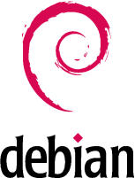

m23 basiert vollständig auf Debian GNU/Linux www.debian.org, einer freien Linux-Distribution. Sowohl der Server als auch die m23-Clients sind Debian GNU/Linux-Systeme. Wir haben bei der Entwicklung von m23 auf Transparenz aller Vorgänge und besonders auf lizenzfreie Clients und Server geachtet! Debian bietet derzeit ca. 25.000 Softwarepakete, die aus dem Internet heruntergeladen und auf beliebig vielen Clients installiert werden können.
root
2016-10-07